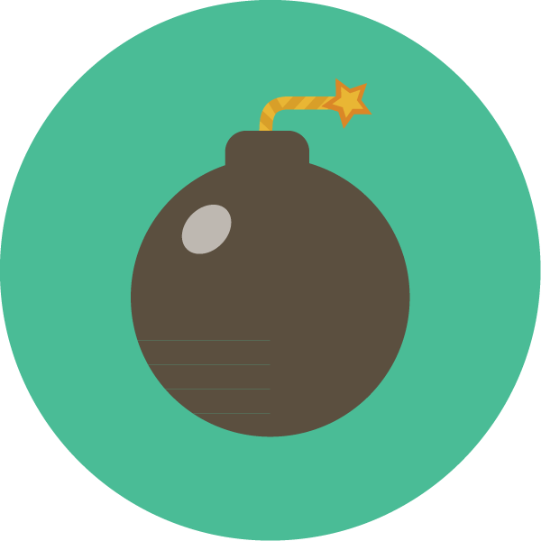

Col·laboració
Actualment, hi participen activament més de 50 alumnes de la Pau Gargallo, ajudant, participant, coordinant, cooperant, ensenyant, aprenent i treballant en equip per fer de la NAU3 un projecte cada dia més impresionant.

Actualment, hi participen activament més de 50 alumnes de la Pau Gargallo, ajudant, participant, coordinant, cooperant, ensenyant, aprenent i treballant en equip per fer de la NAU3 un projecte cada dia més impresionant.

Com una orquesta simfònica, tothom aporta el seu granet de sorra. Il·lustradors, escultors, grafistes, dissenyadors, fusters, estudiants,... tothom aporta allò que sap fer i es barrejen els coneixements i les experiències. Que pot sortir de la escultura i la animació? I de la il·lustració i el disseny?